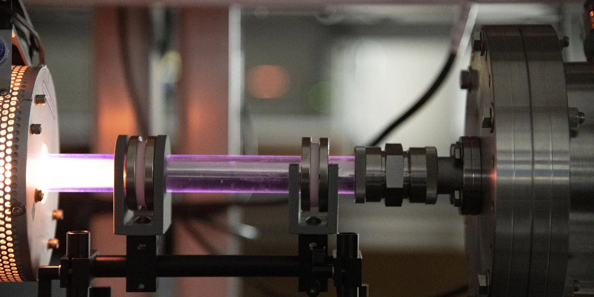
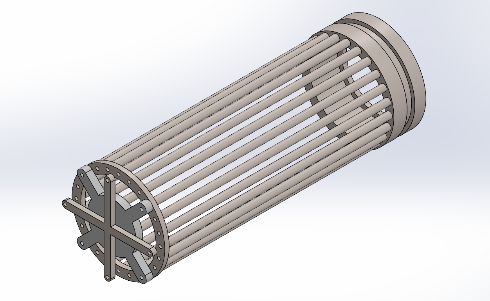
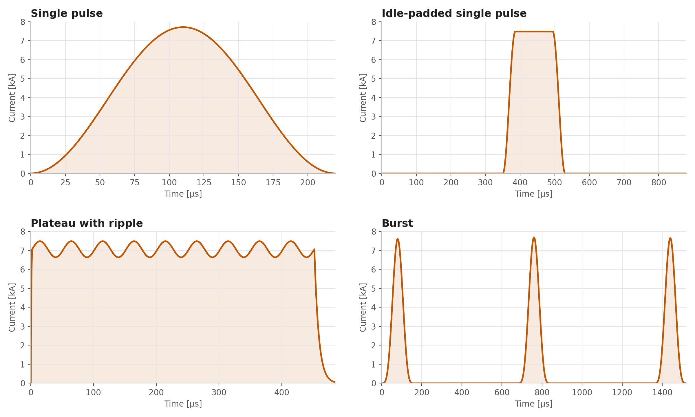

Nov 2025 – Present · UT Austin
Underwood Laboratory
The lab studies reactive transport in fluids and how it applies to propulsion, hypersonics, and advanced thruster design.
- Role
- Undergraduate Researcher
- Focus
- VLEO thruster hardware, ML pulse-shape optimization
- Tools
- Fabrication, testing, Python
What I do
- Experimental hardware: help design, fabricate, and test hardware for new air-breathing thrusters for very low Earth orbit.
- Synthetic data framework: build a Python system that generates synthetic waveforms to train a variational autoencoder for pulse-shape optimization.
- Research areas: reactive transport in fluids, with applications in propulsion and hypersonics.


